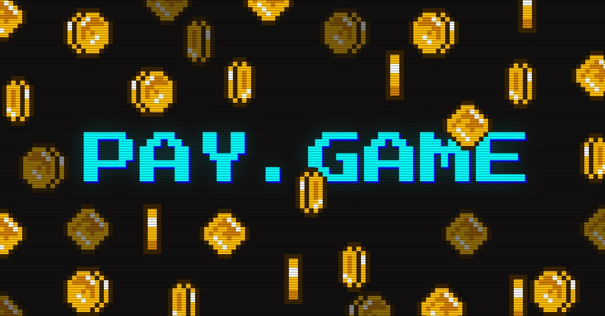
Видеоигры — наверное одно из самых популярных развлечений сегодня. В них играют все подряд, от детей до взрослых. Это одновременно хобби и занятие, которое расслабляет, стимулирует, объединяет в сообществах и поднимает настроение. Повсеместное развитие мобилок превратило игры из развлечения, привязанного в основном к домашней консоли или компу, в способ провести время, доступный всем в любом месте и в любое время. Мобильные игры привлекли аудиторию большинства возрастов и социальных групп, занимая значительную часть доли рынка игр, приносят огромные прибыли студиям разработки и стимулируют создание новых, гипер аддиктивных и прибыльных игровых парадигм, например «гача», «казуал», «триматч», «батлрояль», «ферма» и др.
Хорошо, когда игра сделана с душой, удивляет сюжетом и механиками, и удерживает органичными способами. Как и везде, в играх есть грязные трюки — которые заставляют людей тратить больше времени или денег, чем они бы хотели. Аудитория игр, игровых сервисов, комьюнити и околоигровых форумов по разным подсчётам достигает 3.5 млрд человек, т.е. почти каждый второй на планете, играет, играл или будет играть. Большая часть этих людей, порядка 70% от общего числа, были привлечены мобильными проектами в последние 10 лет, которые, чего уж тут отнекиваться, стали диктовать шаблоны и дизайны разработки всем остальным. Это не хорошо и не плохо, это уже есть — когда у тебя есть настолько большая аудитория, то можно проверять самые различные идеи, механики и теории, в очень короткие сроки на разных возрастных группах, социальных слоях и вообще разных культурах. И это позволяет находить хорошие и отличные сочетания, двигая индустрию вперёд, а высокая конкуренция не даёт застояться отдельным студиям или жанрам. Но у любой медали две стороны, и вместе с положительными моментами и прогрессом идей мы получаем развитие различных тёмных и серых механик и практик. Зачем тратить сотни часов дизайнера, рисовать уникальный арт, оттачивать баланс и придумывать интересные активности, если можно сыграть на особенностях психологии человека?
Весь стим, большая тройка консолей, плюс вендоры поменьше генерируют в пике выхода массовых тайтлов не больше 25% всего оборота игровой индустрии. Разработчики на ПК и консоли, видя всё происходящее на мобильном рынке, особенно горюя над утекающими в чужие карманы 80% прибылей, начинают перенимать хорошие и не очень практики дизайна мобильных игр.
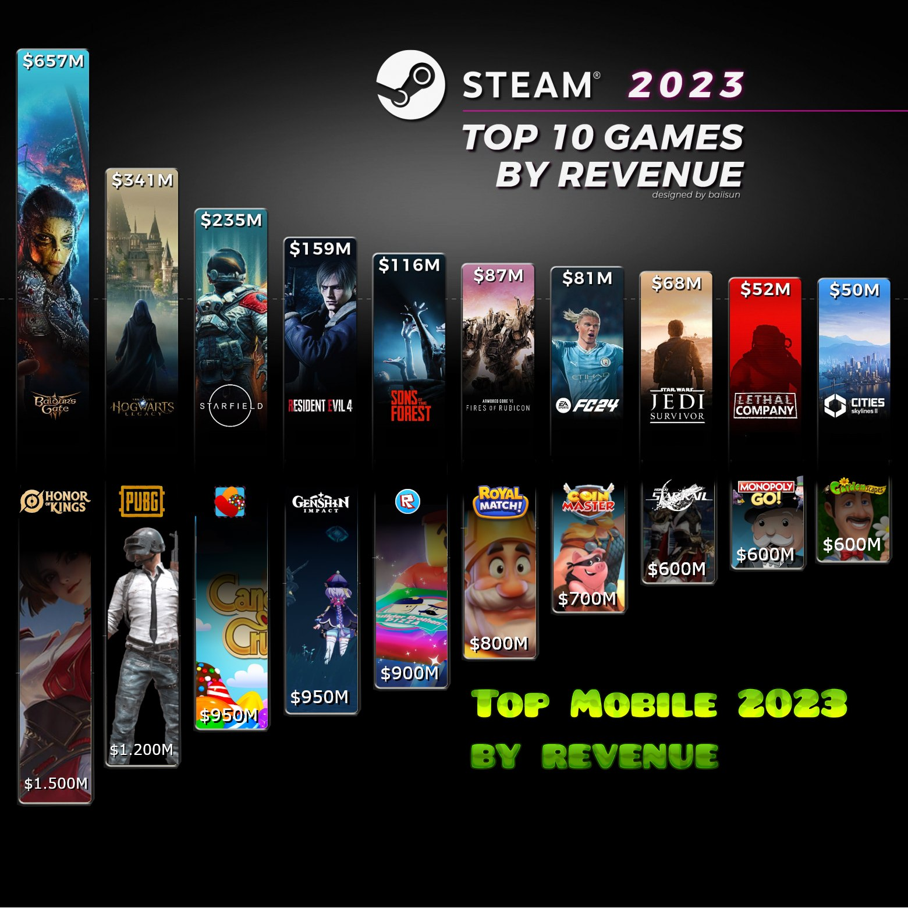
Чувствуете разницу?
Суммарная стоимость разработки GTA5 с дополнениями, переработкой под новые консоли, содержанием серверов, рекламой и франшизами приближается к 1.1 млрд $, месячная стоимость привлечения новых игроков, содержания серверов и рекламы по инсайдерским оценкам колеблется около 10 млн $. Стоимость разработки и содержания игры про забывчивого садовника по разным утекшим данным за всё время ещё не приблизилась к 50 млн $, а прибылей мобильный супертайтл генерирует намного больше, что уж говорить о более удачливых коллегах. Смотря на всё это, руководство студии задаёт резонный вопрос продюсеру… доколе?
Продюсер же, не в силах отказать любимому шефу, начинает продавать команде «тяжёлую нар…» инновационные методы дизайна игр, которые ночью, в темноте, под одеялом очень смелый дизайнер сможет назвать как тёмные паттерны разработки.
Это такие намеренные трюки, добавленные в игру, чтобы заставить игрока действовать определённым нужным образом, зачастую во вред себе и в интересах разработчика. Это может быть что-то простое, что заставит пользователя торчать в игре подольше, или что-то более хитрое, чтобы игроки тратили деньги на ненужные покупки, уже после оплаты всей игры. Полная стоимость AAA-тайтла сейчас без физического носителя составляет около 20 $, вычтите отсюда рекламу, налог Габена и бонусы издателя — и окажется, что крупная студия работает если не в убыток, то находится где-то на грани себестоимости, если продаёт тайтл по цене ниже 50 $. Вот и пытаются заработать, кто как может, перенимая опыт более успешных студий, это нормально, так работает индустрия.
Ночью все кошки серы
Не все паттерны, о которых я расскажу, совсем уж тёмные, некоторые отбелены привычностью и массовым использованием, какие-то уже давно воспринимаются как нормальность в играх, но кому от этого легче?
Если я попрошу вас назвать раздражающие элементы игр, наверное вы вспомните Pay2Win/Use, Playing With Notice (навязчивые уведомления), Artificial Deficite, FoLE (синдром упущенного события), Loot Boxes. Это самые явные и вызывающие ощущение обмана элементы игр, когда разработчики стремятся к прибыли несмотря на желания игроков избежать манипулятивной монетизации.
Daily Rewards
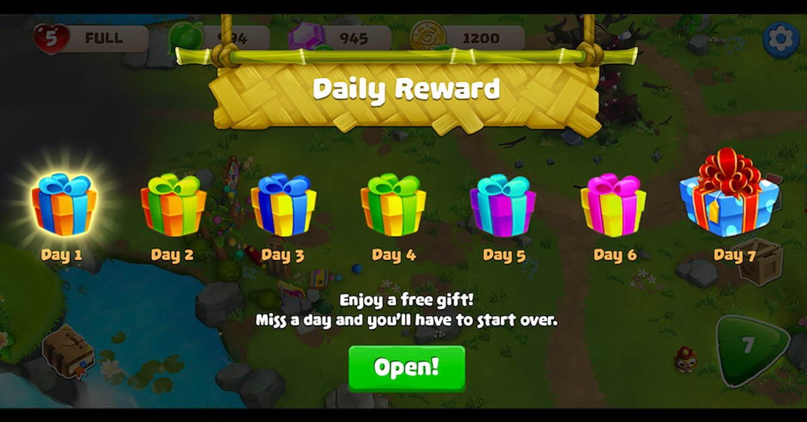
Собери их все!
Как вы относитесь к механике Daily Rewards, прочно вошедшей не только в мобильные игрушки, но и вполне себе AAA-проекты? А ведь это очень спорная механика: в большинстве случаев за каждый уникальный вход игрок получает какую-то плюшку, вещь или баф, и со стороны выглядит очень щедро и безобидно. В чём-то даже хвалимая игроками (бесплатно же) механика начинает работать не в их пользу как тёмный паттерн, когда стыкуется с другими, тоже вроде безобидными механиками, вроде уведомления друзей и приглашения в пати.
На эти дейли реварды могут быть навешены некоторые условия, вроде сыграть один бой, убить N противников или позвать друга в пати. А ещё дейли реварды подталкивают людей заходить в игру даже тогда, когда они этого не хотели, но пропущенный вход ломает цепочку наград — тоже, кстати, один из шаблонов привязки. А это называется «ловушка упущенной выгоды» (FoMO, fear of missing out) — когда решения, принятые в прошлом, не могут быть изменены последующими изменениями. И вот тут у дизайнера появляется масса возможностей повлиять на выбор игрока, например предложить ему более ценный предмет за определённые действия, только сегодня и только сейчас. А ещё через дейлики будет намного проще продать нужную вещь, ведь игрок уже в ловушке упущенной выгоды и зашёл в игру.
«Я входил в игру 35 дней подряд, через пять дней я смогу получить легендарный зелёный меч Халка, или прямо сейчас купить кольцо Всевластия за 0.99 $».
— Некто Федя Сумкин
Премиум-валюта
Дешёвые деньги
Старый как сам мир тёмный паттерн, папа лутбоксов и дедушка всей игровой экономики. Это внутриигровая валюта, которую можно приобрести за реальные деньги. Обычно премиум-валюту трудно получить в игре, если вообще возможно, потому что доступная премиум-валюта моментально ломает экономику и обесценивает все без исключения игровые предметы, которые нельзя приобрести только за премиум.
Первая причина использования — это непосредственно заработок разработчиков, и тут валюта не является чем-то плохим, все мы хотим кушать, а люди — играть в игры. В основном она используется для покупки обновлений, материалов, предметов и т.д., это не всегда плохо, а зачастую использование реальных денег напрямую запрещено законодательством региона, и выход — это только виртуальные баксы.
Вторая причина премиум-валюты в любых играх — это отслеживание читеров и балансирование экономики игры: каждый игровой токен может быть отслежен с момента ввода в игру и до любого момента времени, любая вещь, при покупке или обмене которой использовался премиум, становится помеченной.
Третья причина — механика премиум-валют мешает пониманию, сколько вы тратите в игре реальных денег, это выгодно разработчику, потому что стоимость такой валюты плавает от обновления к обновлению, от ивентов или вообще настроена на игрока. Потратить 10 виртуальных килобаксов на виртуальный чепчик — это совсем не то же самое, что потратить на него 10 реальных долларов, евро или рублей. Думаете, игры на этом закончили забирать ваши рублики из кошеля? Как бы не так… Дизайнеры игрового баланса формируют цены так, чтобы побудить игроков купить вещи дороже, чем планируется.
Это не выдумка игр, это всё пришло из ретейла, где вы видите это каждый день, заходя в магазин: стоимость двух литровых бутылок молока будет выше, чем одной двухлитровой, обычный человек берёт больше товара за меньшую цену, но реальный мир корректирует физику покупок, поэтому мы не тащим домой 10-литровые бутыли с молоком по цене 5 литров, а условно остановились на двухлитровом пакете, хотя зашли в магазин за литром молока.
Это популярная бизнес-практика ретейла хорошо легла на экономику микротранзакций, и даже физика тут нас не останавливает. Поэтому когда условные 100 золотых монет стоят 1 доллар, то контент начинается со 120 золотых монет. Наш мозг при покупке какой-то вещи отбрасывает мелкую часть стоимости и видит только те самые 100 монет и условно 1 бакс, но на оставшиеся 80 монет ничего купить уже не получится, и придётся идти за премиум-валютой снова.
Экономика премиум-валют в большинстве игр настроена не на то, чтобы вы зашли и купили монеты один раз, а чтобы вы много раз заходили в игру и в магазин. Настроена так, чтобы один реальный доллар, потраченный в игре, заставил вас минимум 2 раза вернуться в магазин. Каждый потраченный реальный рублик в игре меняет кривую стоимости валюты для конкретного игрока и повышает вероятность того, что он потратит деньги в будущем.
Заплати, чтобы использовать (Pay2Use)
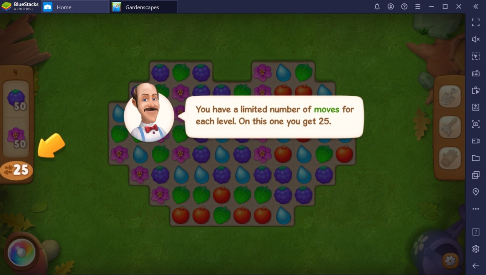
Не, с таким настроением ты слона не продашь.
Это механизм, побуждающий пользователей тратить дополнительные ресурсы для того, чтобы избежать ожидания, завершения трудоёмких и чрезмерно сложных испытаний, а также для достижения прогресса в игре. Причём этот ресурс не обязательно будет реальными деньгами, да, конечно, разработчики не делают игру из чистого альтруизма, и конечная цель — это заработать деньги. Но способов получения их очень и очень много, начиная от премиум-валют и заканчивая мерчем, который очень сильно отдалён от самой игры.
Всем нам случалось играть в игры, где необходимо постоянно чего-то ждать? Например, требуется построить здание, ферму или мост, на что уйдёт 3 часа реального времени. В таких случаях обычно предлагаются три варианта: ждать, пока всё завершится, использовать премиум-валюту для ускорения процесса, или посмотреть рекламу, чтобы сократить время ожидания, причём просмотр рекламы по доходности стоит даже выше премиум-валют на одно применение, ниже объясню почему.
Предположим, предмет будет готов через 3 часа, время, на которое рекламный ролик позволяет сократить ожидание, зависит от множества факторов: платящий игрок или нет, как часто до этого смотрел рекламу, как часто заходит и т.д. Дизайнер баланса рассчитывает время постройки и влияние роликов так, чтобы вы провели в игре не менее пятнадцати минут в день (таймер сортира, об этом в конце статьи), и не важно при этом, сколько игрового времени будет затрачено на постройку.
Ну или вы всегда можете потратить несколько монет и получить желаемый результат незамедлительно. Ну а если копнуть поглубже, то все эти системы давно живут и в больших играх, как-то: DLC, косметические улучшения, платный контент, лутбоксы и сундуки, подписки и батлпасы, платные бои и уровни, просто крупные компании дорожат своей репутацией и не позволяют слишком уж откровенных методов выбивания монеток с хомяков.
Заплати, чтобы победить (Pay2Win/Paywall)
Летом заправляем Хеннеси, зимой Мартель.
Рассмотрим другую ситуацию, когда в игре присутствует особенно сложное испытание. Игроки могут либо длительное время пытаться преодолеть это испытание самостоятельно, либо заплатить, чтобы пропустить его и при этом получить соответствующее вознаграждение.
В некоторых случаях задание оказывается настолько сложным, что его выполнение становится практически (или фактически) невозможным без использования платных бонусов. В одном достаточно старом онлайн-ситибилдере от EA возможность просмотра рекламы отключалась, если игрок был неплатящим в течение месяца, т.е. игрок безальтернативно должен был купить бонусы, чтобы продвигаться в уровнях; когда это вскрылось, компания получила оборотный штраф от антимонопольщиков.
Это является примером скрытого платного доступа (пейволла). Подобные препятствия вызывают у игроков сильное разочарование, что нередко приводит к совершению внутриигровых покупок для обхода испытания или получения необходимых обновлений/ресурсов для его выполнения. В конечном итоге все эти системы сводятся либо к количеству проведённого времени в игре, либо к премиуму или его аналогам, которые оставляют финансовый след.
Похожие системы также присутствуют под разными видами в сингловых играх, просто они более размазаны по системам и не всегда завязаны на деньги. Мощное снаряжение и квесты, которые разблокируются при достижении определённого уровня, типов персонажей или скилов, система энергии или схожие системы расходников. Это тоже pay2win, только на уровне механик и сюжета, а вот чем платить — это уже другой вопрос.
Заплати, чтобы открыть (Lootbox)
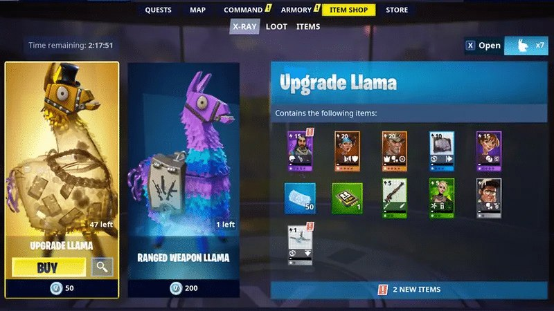
Лутбоксы (виртуальные коробки с чем-то ценным) имеют, пожалуй, самую древнюю историю в видеоиграх, начиная от эпохи рандомных вещей в сундуках в Zelda или ящиков со скилами в Контре. Но одно дело, когда такие механики встроены в игру и не требуют использования каких-то ресурсов, и совсем другое, когда к ним начинают подключать механики монетизации, а это уже начинает иметь много общего с азартными играми. Игрокам проще принять выпадение пустышки, когда за неё нужно платить только своим временем, и значительно труднее, если используются ресурсы с финансовым следом. Как правило, лутбоксы игроки могут приобрести за деньги или внутриигровую валюту, и опять же баланс таких систем рассчитывается с учётом на платящих игроков, практически нигде вы не встретите получение топовых вещей без финансового следа. Потому что появление мощного меча без финансового следа ломает экономику игры, и без того трудно балансируемую. А чтобы игрок получил свою дозу дофамина, покажут вам эффекты, фанфары, как будто тот сорвал джекпот в казино, хотя это казино и есть, чего уж тут скрывать.
Ловушка мощности (Power Creep)
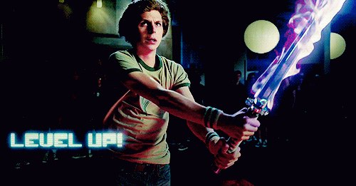
Итак, вы поддались на уверения игры в необходимости этого «супер-пупер мега-редкого фиолетового» будильника, ускоряющего игровое время в два раза, и потратили пару баксов на его покупку. Будильник великолепен, весело тикает, искрит эффектами и каждый час напоминает о себе, ферма развивается не по дням, а по часам. Пару дней всё идёт как в сказке, а потом вы начинаете замечать, что волшебный будильник не такой уж и волшебный и ферма теряет в развитии, и уже через неделю всё вообще возвращается к прежним затратам, если смотреть на реальное время. Разработчики продают сломанные будильники?
Нет, будильник работает, просто время на сбор урожая выросло, обычно дизайнеры называют это ростом уровня, сложности или чем-то другим. Но в науке «обмана» игрового дизайна это называется «сдвиг мощности» (power creep), когда параметры супер-пупер вещи начинают меньше влиять на реальный прогресс в игре, а в магазине уже появился новый будильник x2 жёлтого цвета, ещё более красивый, громче тикает и даёт больше буста. И вот вы готовите ещё пару баксов для новой покупки, этот цикл никогда не закончится.
Новый контент должен быть лучше того, что есть у игроков на руках. Ловушка мощности есть как в онлайн-проектах, так и в сингл-играх, как бы разработчики ни заявляли о стабильных параметрах пушек и монстров, им приходится идти на то, чтобы балансировать монстров и оружие, вводить понятие резистентности одних к другому. В сингл-играх ловушка мощности обычно появляется ближе к концу игры, когда, казалось бы, перекачанный игрок с самыми крутыми пушками должен разбирать боссов на раз-два, но согласитесь, тогда бы они не были боссами. А вы можете уловить разницу между будильниками и боссами?
Автоматические реакции (MMM, Misuse Muscle Memory)
Привыкли руки к топору
Это один из чёрных паттернов, направленный на использование автоматических реакций нашего мозга. Когда игрок привыкает выполнять определённые действия, они выполняются уже без обдумывания, и внезапные изменения в поведении игры в большинстве случаев застают нас врасплох. Лучше всего это демонстрируется в футбольных и файтинг-симуляторах, когда заложенные тайминги напрямую влияют на используемые механики. Или недавний пример с Elden Ring, когда один из патчей изменил тайминги пары умений, и игроки, которые привыкли к старым значениям, вдруг стали проигрывать на ровном месте.
Для мобилок и разных не особо чистых на руку дизайнеров этот паттерн используется для увеличения просмотров рекламы, запуска окна покупок и т.д. Некоторые игроки, в ожидании или нетерпении, нажимают на определённую знакомую область экрана, где обычно располагаются элементы для закрытия рекламы или продолжения игры. Размещая в соответствующих местах дополнительные элементы, такие как кнопки покупки или запуск другой рекламы, можно добиться нервного тика у игроков, ну или случайных покупок.
Ложная срочность (False Treshold, Timeless sales)
Купи слона
Ещё один типичный тёмный игровой паттерн — создание ложной срочности или очень близкие ему бессрочные распродажи, он также пришёл из ретейла, где призван продать залежавшийся товар. Ориентирован исключительно на интересы разработчиков, но играет на формулировках восприятия времени и манипуляции эмоциями, чтобы представить срочное уведомление как нечто ценное для пользователя. Чтобы больше вовлечь игрока, дизайнеры создают у людей страх упустить что-то интересное, что в игре происходит некое важное событие без участия игрока.
Классическим примером в больших играх являются цепочки квестов или ограниченные по времени задания, хотя игра может бесконечно растягивать время прохождения, для игроков это подаётся ограниченным по времени.
В мобильных или MMO-играх примером будут уведомления из серии «Ваши друзья пригласили вас на ивент» или «выросла картошка, пора собирать урожай». Как только вы нажимаете на уведомление или заходите в игру, она может показать вам бесконечное количество контента, заставляя вас задержаться на несколько часов. Я понимаю, что разработчики стараются увеличить время пребывания в игре, но часто это выходит за рамки дозволенного, не давая ему взамен никакой реальной ценности проведённого времени.
Тараканий мотель (Roach Motel)
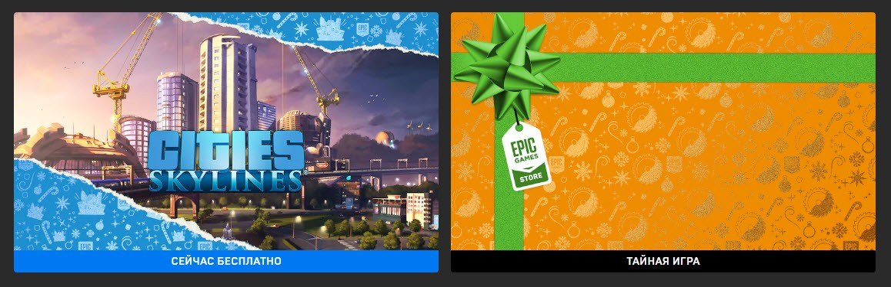
Вы тоже ждёте следующую игру в Epic Store?
Усложнение сценариев получения некоторых предметов или ограничение инвентаря, ограничение веса переносимых предметов — ещё один тёмный паттерн, направленный на страх потерь. Ситуация, когда игрок легко попадает в состояние, которое постоянно требует некоторых ресурсов, или игровая механика, которая затрудняет отказ от её использования без существенных затрат, будь то время, деньги или другие ресурсы.
В онлайн-играх это могут быть подписки и премиум-аккаунты, игровые акции и события или системы накопления бонусов, завязанные например на daily rewards. Он часто критикуется за спорные методы удержания игроков, как со стороны сообщества разработчиков, так и самими игроками. Однако при этом широко используется в индустрии игр для поддержания вовлечённости и как одна из основ монетизации. Вы ведь не думали, что бесплатная игра в Epic Store на самом деле бесплатная?
Иллюзия выбора (Options hold)
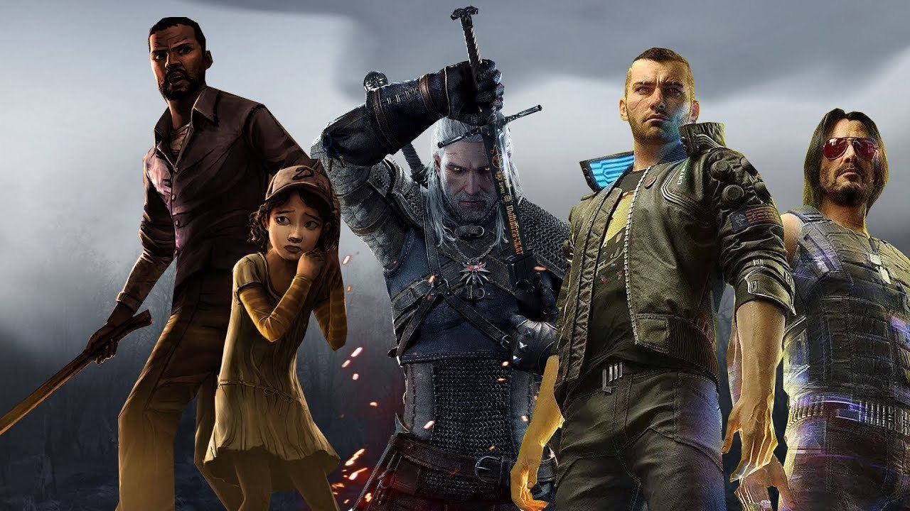
Влияет ли Джонни на твой выбор?
Ещё один даже не тёмный паттерн, а шаблон разработки, при котором игра создаёт впечатление, что все выборы игрока равноправные и нет явного преимущества, предоставляя видимость свободы и равнозначности принятых решений. Однако в большинстве случаев решения или пути квестов ведут к разным концовкам или даже необходимы для успешного прохождения игры. Например, плохая концовка имеет явно выраженный негатив, заставляя перепроходить игру.
Среди методов, которыми реализуют иллюзию выбора, например, можно выделить «скрытые предпочтения», когда опции диалогов размещаются в первых пунктах и они с большей вероятностью будут выбраны. Или «прогрессивную манипуляцию», когда нежелательные выборы имеют меньшее влияние на параметры персонажа, вещи или отношения с фракциями. Например, игроки, имеющие хорошие отношения с игровой фракцией, будут стараться поднять этот параметр, даже если текущие решения идут во вред сюжету или текущим планам игрока. Или другой пример, когда некий баф даёт разные преимущества для разных отыгрываемых ролей, игроки, зная сильные стороны при сборке билда, будут отдавать предпочтения тем скилам и характеристикам, что дают больший прирост параметров, даже если они не подходят для выбранного отыгрыша.
Лидерборды (Leaderboards)
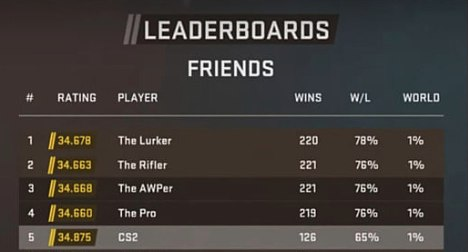
Ещё один старый, как само человечество, паттерн, эксплуатирующий естественную жажду первенства. Воскресные турниры с друзьями в Mario или Сонике — не знаю как у вас, но я частенько засиживался допоздна, так и не успев сделать домашку. Пропустить воскресный турнир считалось чем-то неприличным, пару дней друзья потом точно разговаривать не будут.
Таблицы лидеров являются неотъемлемой частью многих современных игр, где необходимо выполнять задания или побеждать других игроков, чтобы заработать очки. Чем больше у игрока очков, тем выше его рейтинг, чем выше рейтинг, тем сложнее его удерживать, тем сильнее вовлечённость людей; не открою особый секрет, если скажу, что частенько такие рейтинги подкручиваются, чтобы дать больше мотивации для получения лучшей позиции. Или вся таблица бьётся на секции, чтобы дать игрокам видеть свою значимость в рамках некоторой группы, а первое место в серебряном дивизионе или в золотом имеет уже второстепенное значение.
Обычно такие события имеют чёткие временные ограничения (день, выходные, месяц и т.д.). По истечении этого срока игроки получают награды согласно их позициям. Получается, что даже если человек давно играет в эту игру, ему необходимо участвовать в таких событиях, чтобы сохранить своё место в таблице лидеров.
Синхронизация (Time Treshold / Synclife)
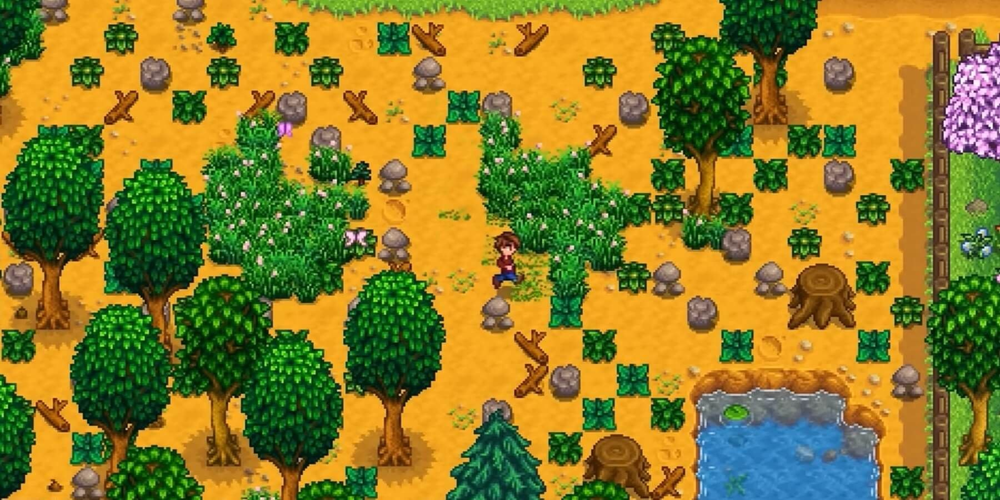
Один из самых коварных и недетектируемых паттернов: вы можете получить какие-то предметы только при определённых условиях, обычно это завязано на время суток или время, проведённое в игре.
Время в некоторых играх про покемонов синхронизируется с дополнительными параметрами игры и реального мира, если вы играете днём, то в игре сейчас день. Одни вещи можно получить только условно днём, другие — только условно ночью, поэтому, чтобы получить некоторые вещи, игрокам нужно запускать игру не тогда, когда это удобно, а тогда, когда это нужно дизайнерам.
Из больших игр могу вспомнить Animal Crossing — игровое время синхронизируется с датой и временем на консоли, а некоторых рыб можно поймать только в определённые дни определённого месяца: редкую рыбу Бетта можно поймать в реке с 9 утра до 4 вечера с мая по октябрь (Северное полушарие) или с ноября по апрель (Южное полушарие).
Из этого паттерна выросло несколько других, более вам известных, например: механика «вернись позже», когда квест может быть завершён или продолжен спустя некоторое игровое или реальное время, ограниченные по времени товары, акции и предложения, таймеры на строительство и некоторые другие.
Временные ловушки (Time Gates)
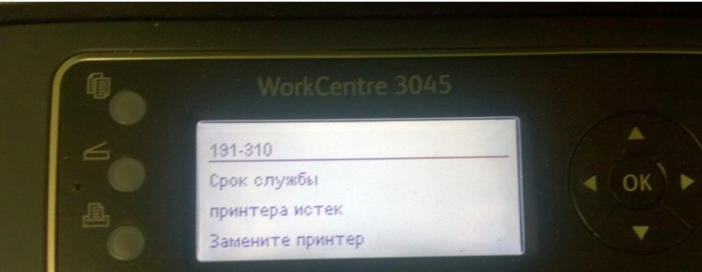
Тоже достаточно часто встречающийся паттерн подталкивания игроков к покупкам, однако в отличие от многих требующий изменения механик самой игры, или игра заранее создаётся с возможностью его применения. Суть состоит в том, что предметы или механики в игре рассчитаны на бесплатное применение X часов/ударов/применений, после чего, если игрок не заплатил, не посмотрел рекламу или не выполнил ещё какие-то нужные разработчикам действия, он (предмет или механика) начинает деградировать или ломается, начиная производить меньше «восторга».
Отчасти похоже на Power Creep, но первый более честный, бонус получается за купленный товар, здесь же сознательно закладывается деградация на этапе разработки игры. В больших сингловых играх, однако, это может быть вполне легальной и оправданной механикой, например положенной на систему загрязнения оружия или его ломания, но без сопутствующих механик починки или чистки такое устаревание выглядит как обман игрока и отбор у него мощных пушек или предметов.
Деление валют (Shadow Currency)
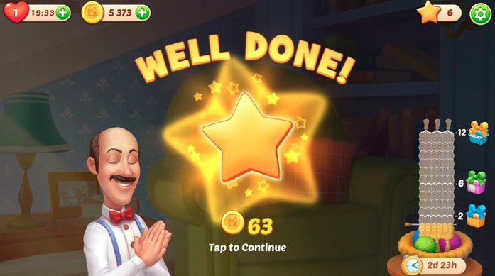
Монеты → кристаллы → рубины → бустеры?
Использование двух и более видов валюты, одна из которых обязательно покупается за реальные деньги, а остальные являются её деривативами, делается для запутывания реальной стоимости покупок. Обычно теневые валюты начинают вводить в игру, если основная премиум-валюта перестала приносить запланированную прибыль.
Чтобы скрыть повышение реальной стоимости премиум-валюты и непрозрачно поднять цены, теневая валюта вводится для оплаты некоторых видов товаров или начинает работать параллельно с премиум. Так, например, некоторые золотые танки можно купить только за золотые дублоны, но сами золотые дублоны можно получить только за премиум на утренней рулетке или подобрать с павших противников; у игроков, не отслеживающих пристально курс теневой валюты, никогда не будет реального курса одной к другой.
Другим примером теневых валют являются бафы и бустеры, которые размывают влияние основной валюты через другие игровые параметры. Само применение бустеров и бафов не является чем-то плохим, но чем длиннее цепочка получения реального эффекта от вложенного рубля, тем больше возможности размыть финансовый след предмета. Так что, покупая на рубли монеты, а на монеты кристаллы, а на кристаллы бустер и баф, вы уже и не понимаете, сколько стоит бустер в реальных деньгах, и легко с ним расстанетесь, а значит дизайнер сделал свою работу хорошо, и рубли вы уже потратили.
Приманки (Baits)
Достаточно частый паттерн из реальной жизни, когда реклама обещает в магазине наличие товаров по определённым ценам, но на самом деле они либо недоступны (распроданы, только с витрины, на складе и прибудут через неделю), либо требуют выполнения некоторых условий для получения, вроде повышенной страховки, дополнительных услуг и т.д. Играм в этом плане намного проще манипулировать вниманием человека, поместив рекламируемый товар в середину списка, который ещё надо промотать до нужного места. Может, вы пока листаете, ещё чего прикупите.
Редкие / Случайные коллекции (Dependency on Rare Items)
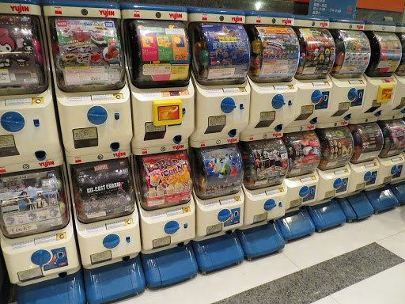
Тёмный паттерн, который предполагает использование редких или случайных предметов как ключевых элементов игрового процесса. В такой механике игроки сталкиваются с ситуацией, когда для успешного прохождения игры, получения мощных баффов или уникальных навыков требуется собрать определённые предметы. Эти предметы, в свою очередь, могут быть доступны только через лутбоксы, случайные награды или ограниченные по времени события. Основная цель такого паттерна — стимулировать игроков тратить реальные деньги на попытки получить нужные предметы, зачастую независимо от их желания.
Механика редких и случайных коллекций является одной из самых спорных в игровой индустрии. Она основана на эксплуатации человеческого стремления к обладанию редкими вещами и достижению успеха, что может привести к значительным финансовым затратам и негативному опыту игроков. Примеры — gacha-игры, Immortal Diablo и внезапно Horizon: Zero Dawn, в которой предметы редких сетов генерируются в рандомных локациях в начале игры.
Фреймворк эмоций (MINDSPACE)
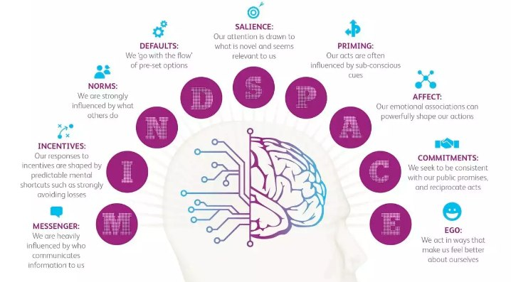
Всё уже посчитано
Всё, что я написал выше, — довольно явные тёмные паттерны, появившиеся на заре маркетинга ещё в неигровую эру и хорошо детектируются людьми, эдакий иммунитет к рекламе и навязчивой монетизации. Но на этом противостояние меча и щита монетизации не заканчивается, с развитием игровой психологии в индустрии стали появляться такие комплексные методики, как MINDSPACE. Раскладывая каждую игровую деталь или механику на соответствующие составляющие, можно ответить на вопрос, как она будет восприниматься игроками и как её изменить для получения нужного эффекта.
- M / Messenger / Коммуникации — информация зависит от того, кто является её потребителем и источником.
- I / Incentives / Стимулы — реакция на события у большинства людей схожа, например мы стремимся избежать потерь сильнее, чем получить выгоду.
- N / Norms / Нормы — на нас сильно влияет поведение других людей (нам хочется вписаться в общество).
- D / Defaults / Значения по умолчанию — мы склонны выбирать дефолтные или рекомендованные опции.
- S / Salience / Актуальность — внимание привлекают известные нам вещи и предложения, например которые выбирали наши знакомые.
- P / Priming / Прайминг — наши действия в разное время суток имеют разную мотивацию, люди реже покупают вещи утром или чаще покупают в пятницу.
- A / Affect / Эмоции — мы действуем под влиянием эмоциональных ассоциаций, например игроки с большей вероятностью делают покупки после получения уровня или каких-то ачивок.
- C / Commitments / Обязательства — игроки стараются выполнять обещания и отвечать взаимностью, на этом строятся приглашения в игру от знакомых людей.
- E / Ego / Эго — мы склонны к такому поведению, которое помогает нам чувствовать себя лучше других людей.
Механизмы, лежащие в основе тёмных паттернов и техник «подталкивания», не слишком сильно отличаются друг от друга: и те, и другие опираются на психологию, направлены на изменение человеческого поведения, но созданные по MINDSPACE решения не детектируются ещё массово игроками.
Послесловие…
А завершить статью я хотел бы высказыванием моего любимого игрового дизайнера, подарившего миру не одну замечательную игру.
«Говоря о видеоиграх, люди часто рассуждают о графике, управлении, числе полигонов. Но почему бы не поговорить о других составляющих игры, например об эмоциональной составляющей? Когда мы обсуждаем фильмы, мы можем поговорить и про спецэффекты — и про историю, её значение, то, что хотел донести режиссёр. Я считаю, и в играх надо смотреть не на технические детали, а на полученный опыт и эмоции».
— Мишель Ансель (Rayman, Beyond Good & Evil)
Разработчики игр стремятся создать игру так, чтобы ценность потраченного на персонажей и окружение времени росла с увеличением времени, проведённого в игре. Кастомизация персонажа, редкие предметы, домашние животные, спутники и т.д. — это всё делает игровой опыт очень персонализированным и значимым, не оставляя чувства зря потраченного времени и денег после прохождения игры.
Если вы вложили 20 часов в прохождение игры, то эти 20 часов приобретают для вас ощущаемую ценность. Вы не стали бы тратить 20 часов на сборку модели лего, чтобы затем её разрушить, так и с играми — вложенные 20 часов в игру не дают вам прекратить в неё играть. А если вы потратили на игру не только время, но и деньги, вы будете продолжать играть, считая это необходимым как еда или работа, чтобы избежать чувства зря потраченных средств. Время и деньги будут самыми сильными стимулами возвращать людей в вашу игру.
← Все статьи